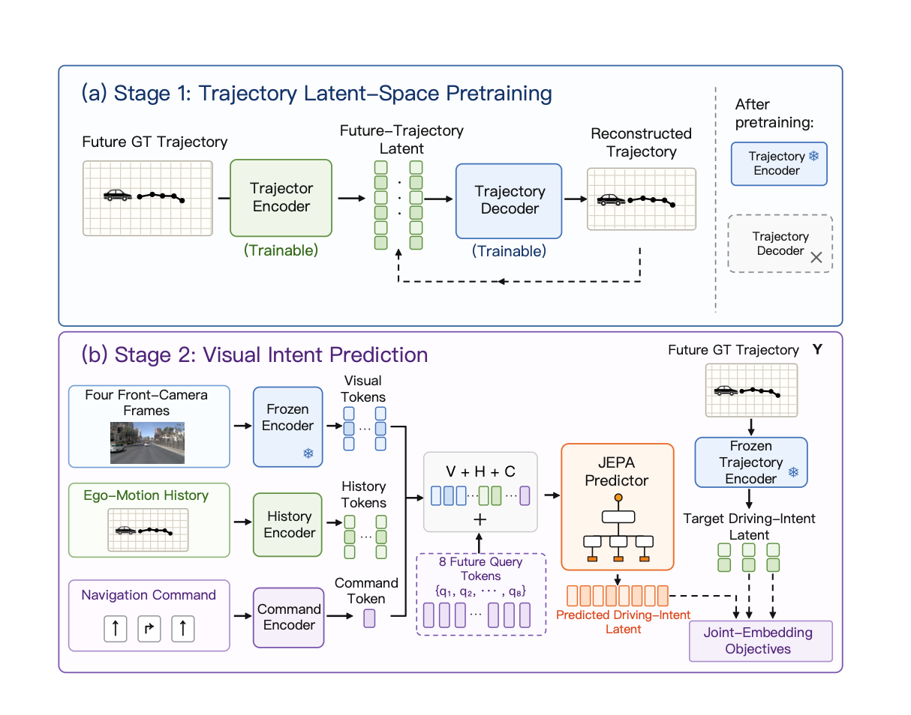

Auto-JEPA: A Latent World Model of Continuous Intent for End-to-End Autonomous Driving
Under review at AAAI 2027.
Learning continuous future driving intent through joint-embedding prediction. Auto-JEPA achieves 91.3 PDMS on NAVSIM v1 and 89.1 EPDMS on NAVSIM v2. Semantic occlusion experiments probe its sensitivity to traffic participants that affect future driving.